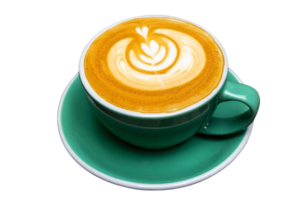

As the most popular coffee drink out there, the latte is comprised of a shot of espresso and steamed milk with just a touch of foam. It can be ordered plain or with a flavor shot of anything from vanilla to pumpkin spice. (Here's how to make a copycat Starbucks pumpkin spice latte.)
LATTE
As the most popular coffee drink out there, the latte is comprised of a shot of espresso and steamed milk with just a touch of foam. It can be ordered plain or with a flavor shot of anything from vanilla to pumpkin spice. (Here's how to make a copycat Starbucks pumpkin spice latte.)